TRAVPLAN · 챕터 발표 · MPC 구축 (§M)
MPPI 옆에
acados NMPC를 세우다
치명 셀 제약, 0차 GP 잔차, 튜브 — 그리고 plant에서 잰 결과
§M
TP-0070 → TP-0152
acados v0.3.4
최근 연구 13편
순서
설계에서 시작해 plant 비교의 판정으로 끝난다
왜 두 갈래인가
MPPI와 NMPC가 잘 다루는 것
설계
twist 모델, OCP, 솔버, 치명 셀 제약
GP·튜브·시뮬 리그
0차 GP 잔차, 희소 GP, 튜브, plant
최근 연구 비교
2025–2026 13편의 공통점과 차이점
작업 기록
0단계 6/12 → 정적 40/40 → plant 비교
정리와 다음
지연 상태 NMPC, 부호 있는 경사 GP
6/12
0단계, 지형 없음 (TP-0070)
→
9/12
치명 셀 제약 (TP-0071)
→
38/40
제약의 구멍 + CBF (TP-0093)
→
40/40
명령 수정 (TP-0122)
→
222/360
plant 레벨 3, 치명 34 (TP-0152)
0 · 왜 두 갈래인가
MPPI는 비평활 비용을, NMPC는 제약을 잘 다룬다
샘플로 절벽 비용을 넘는다
- 치명 셀·이진 충돌을 그대로 쓴다
- Jacobian이 필요 없다
- 확률 제약에 GP 분산을 쓴다(E.10)
제약을 조이는 자리가 있다
- hard 제약과 slack
- 튜브로 제약을 조인다
- 0차 GP 잔차(TP-0070·0071)
둘은 같은 Controller 프로토콜이고 같은 벤치마크(guidance+mppi, guidance+mpc)에서 비교한다. 잔차 GP(control/acados_mpc/gp.py)는 둘이 공유한다.
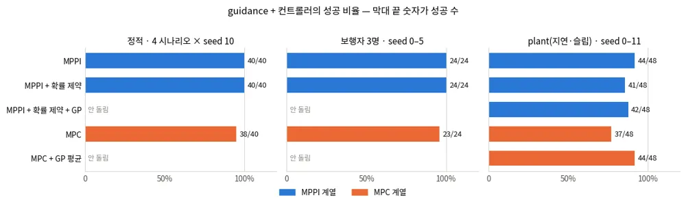
travplan: 목적은 성능이 아니라, GP 잔차·0차 근사·튜브로 조일 제약을 만드는 것이다.
1 · 설계 (M.1)
OCP를 어떻게 세우나
스워브 twist 모델, 추종 비용, 솔버 설정, 그리고 치명 셀을 제약으로 옮기는 일
M.1 · 모델
twist를 상태에 두어 가속에 box 제약을 건다
| 항목 | 값 |
|---|---|
| 상태 | \(z = (x, y, \theta, v_x, v_y, \omega)\) — 6 |
| 입력 | \(u = (a_x, a_y, \alpha_z)\) — twist 변화율 |
| horizon | 40 × 0.1 s = 4 s (MPPI와 같다) |
| 솔버 | acados SQP-RTI, HPIPM, ERK |
\(\mu_d\): GP 잔차 평균(파라미터). control/acados_mpc/model.py
모델에 없는 것 ①
모듈 역기구학. 차체 box 제약으로 옮긴다.
모델에 없는 것 ②
액추에이터 지연과 지형 슬립. plant가 만든다.
그 차이는
잔차 \(\mu_d\)가 흡수한다(TP-0068).
travplan: 입력 좌표계가 SmoothMPPI·Planner D와 같아서, horizon이 같으면 비교가 성립한다.
M.1 · OCP
추종 비용은 선형 최소제곱, 장애물은 노드마다 반평면이다
추종 비용
\(y = (x, y, v_y, \omega, a)\). \(W = \mathrm{diag}(10, 10, 0.1, 0.1, 0.05, 0.05, 0.02)\)
종단 = 진행
\(W_e = 50\)이 MPPI ReferenceCost의 진행 역할을 맡는다.
반평면 두 줄
치명 셀(행 0)과 그 시각의 보행자(행 1). 모두 slack을 둔다.
참조 만들기
Guidance 경로는 \(v_{des} = 1.0\) m/s로 시간을 매기고, Planner D는 시간 인덱스를 그대로 쓴다.
slack 가중치
장애물·보행자 행 1e6, twist box 1e5. 나쁜 초기해가 문제를 infeasible하게 만들지 않게 한다.
비용 형식 LINEAR_LS, 가중치는 MPCConfig 기본값(control/acados_mpc/ocp.py)
M.3.5 · 솔버 설정
페널티 1e6과 RTI 3회가 함께여야 접평면 제약이 선다
| 변형 (seed 0, 4 시나리오) | 성공 |
|---|---|
| 느슨한 페널티 1e4, RTI 1회 | 2/4 |
| 페널티만 1e6 | 2/4 |
| RTI만 3회 | 3/4 |
| 페널티 1e6 + RTI 3회 | 4/4 |
| hard 제약 | 2/4 (QP status 3) |
접평면은 iterate에 따라 달라진다
RTI는 호출당 Newton 스텝 한 번이다. 노드가 움직이면 접평면도 바뀌므로 반복을 늘려야 제약과 해가 만난다.
HPIPM 부분 condensing(N=5), Gauss-Newton, 리셋 뒤 첫 풀이는 RTI 5회
EDT
가장 가까운 치명 셀을 수치로
→
접평면
노드별 \(n_k, b_k\)를 파라미터로
→
RTI 1회
Newton 스텝 한 번, 노드가 움직인다
→
다시 접평면
3회 반복해 제약과 해가 만난다
travplan: 풀리지 않는 QP가 내는 것은 안전이 아니라 무작위 명령이다. 그래서 모든 행을 soft로 둔다.
M.1.1 · 비용 옮기기
MPPI 비용 항은 MPC에서 비용·제약·종단으로 갈라진다
| MPPI 비용 항 | MPC에서 | 주의 |
|---|---|---|
ReferenceCost | 참조 추종 2차 비용 또는 진행도 | Planner D는 시간 인덱스, Guidance는 경로만 준다 |
TraversabilityCost | 매끄러운 항만(경사·거칠기) | 치명도는 빠져 제약으로 간다 |
RiskCost | 보행자 → 제약, σ → 제약 조이기 | σ가 비용으로 남으면 GP·튜브가 붙을 데가 없다 |
AttitudeCost | roll/pitch 제약 | 지도 보간이 매끄러워야 한다 |
ControlCost · GoalApproachCost | 입력 2차 비용 · 종단 비용 | 그대로 |
| — | 신설: 거리 제약 \(d(x) - r \ge \rho_k\) | 세 기법이 모두 여기 붙는다 |
비용으로 남는 것
매끄럽고 미분할 수 있는 것: 추종, 입력, 종단.
제약으로 가는 것
계단처럼 끊기는 것: 치명 셀, 보행자, 자세 한계.
travplan: 경사·거칠기의 매끄러운 지형 항은 아직 없다. 치명 셀 근처 여유는 부드러운 여유 행(TP-0117)이 맡는다.
M.1.2 · M.3.4 · 치명 셀 제약
gradient가 없는 치명 셀은 비용이 아니라 제약으로 넣는다
치명 셀(cost ≥ 0.95)은 계단이라 미분이 없다. MPPI는 샘플로 넘지만 MPC는 절벽에서 죽는다.
CasADi는 기호 인덱스로 격자를 읽지 못한다. 그래서 매 스텝 EDT로 가장 가까운 치명 셀을 수치로 찾아 접평면을 파라미터로 넘긴다.
EDT 2.5 ms, 41노드 조회 0.27 ms. 노드마다 따로라 좁은 틈도 표현된다.
\(\Delta\) 셀 크기, \(m\) 여유, \(\gamma = 0.2\): 이산 CBF 감쇠(TP-0093). 벽에 붙기 전에 감속한다.
소수 장애물을 파라미터로
Zeilinger 그룹 방식. travplan은 원 대신 노드별 접평면
매끄러운 함수 근사
지역 비용장을 다항식·RBF로
격자 고정 코드 생성
ca.interpolant. 정적 지도에만 쓴다
travplan: 이것은 우회가 아니라 전제다. 조일 제약이 없으면 GP 분산도 튜브도 쓸 자리가 없다.
M.1.2 · 치명 셀 제약 · 바깥 실례
지형 조건을 노드마다 볼록 제약으로 근사하는 같은 전략이 다리 로봇 NMPC에도 있다
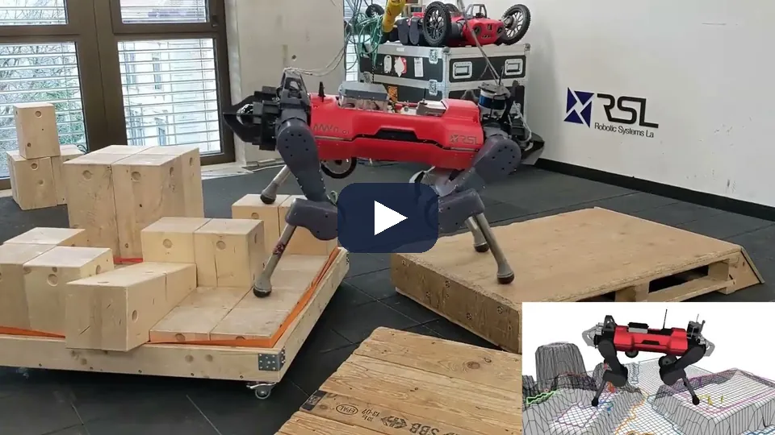
비볼록 → 노드별 볼록 부등식
foothold가 놓일 수 있는 영역을 예측 노드마다 볼록 부등식으로 근사해 온라인 MPC에 넣는다. travplan의 노드별 접평면과 같은 자리다.
전신 자유도, 다리
발 놓기·충돌 회피·동역학을 한 OCP로 푼다. travplan은 차체 twist 6상태뿐이라 문제가 훨씬 작다.
Grandia 외, “Perceptive Locomotion through Nonlinear Model Predictive Control”, T-RO 2023 — arXiv:2208.08373
M.1 · 모듈 한계
모듈 역기구학은 넣지 않고, 차체 box 제약으로 옮긴다
IK는 비평활이다
atan2, 모듈 반전, 클램프, 고정점 반복 3회. 넣으면 SQP가 죽는다. 비동축 오차는 6 mm/s로 작아 잔차가 흡수한다.
조향 ±56.2°가 원뿔을 만든다
바퀴마다 \(|v_{iy}| \le \tan\delta_{\max}|v_{ix}|\). 차체 축에서 56.2°–123.8° 방향은 못 낸다(TP-0162). NMPC는 이 원뿔을 모른다.
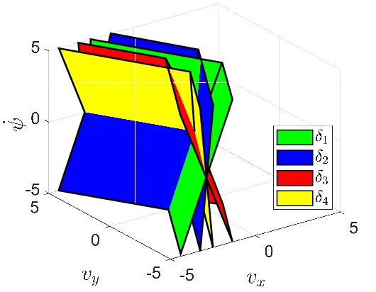
[1] Liu 외, ICAR 2025 — arXiv:2510.19054
M.1 · 모듈 한계 · 영상
불연속 평면을 넘으면 바퀴가 뒤집히고, 평면을 피하는 Planner가 그것을 막는다
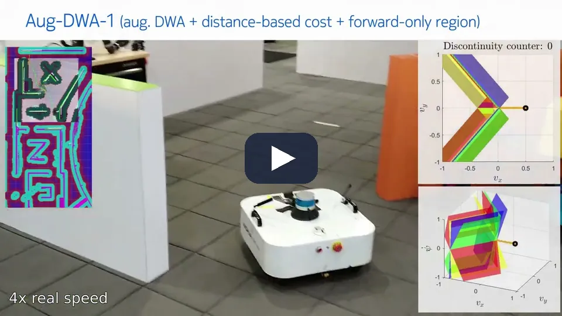
wheel thrashing
평면을 넘으면 바퀴를 뒤집어야 한다. 순수 DWA는 실물 미로에서 바퀴가 쉬지 않고 왔다 갔다 해 시험을 중단했다 [1].
plant 조향 ±56.2°는 90°보다 좁아 구역 대신 바퀴마다 실현 가능 원뿔이 생긴다(TP-0162). NMPC는 이 원뿔을 모른다.
[1] Liu 외, ICAR 2025 — arXiv:2510.19054
2 · GP 잔차 · 튜브 · 시뮬 리그
모델 오차를 어디서 얻고 어떻게 넣나
GP 평균은 파라미터로, 분산은 제약의 오프셋으로. 그 전에 배울 오차가 있는 plant가 필요하다
M.3.6 · GP 잔차
GP 평균을 노드별 파라미터로 넣으면 0차 근사가 공짜로 선다
탐색 방향은 \(f_{\text{swerve}}\)의 미분만 쓰고, 전방 시뮬레이션에는 \(\mu_d\)가 그대로 들어간다.
plant가 만드는 오차 (크기 순)
- 액추에이터 1차 지연, τ = 0.2 s
- 모듈 기구학: 조향 한계·반전·스크럽
- 지형 슬립: twist를 \((1-s)\)배
명목 대비 RMSE 66–78% 감소. 첫 시도는 95% coverage 0.35였다(관측 잡음 \(\sigma_n^2\)을 빠뜨림).
| 잔차 (plant + guidance+mppi, 2,000 샘플) | dv_x | dv_y | dω |
|---|---|---|---|
| |d| 평균 / 최대 | 0.048 / 0.167 | 0.021 / 0.107 | 0.052 / 0.281 |
| 선형모형 R² | 0.708 | 0.951 | 0.888 |
travplan: TP-0071에서 반평면용으로 만든 파라미터 전달 구조가 그대로 0차 GP-MPC가 됐다.
M.3.6 · GP 잔차 · 같은 구조의 도구
L4acados는 travplan의 mpc_gp와 같은 구조로 Python 잔차를 acados에 꽂는다
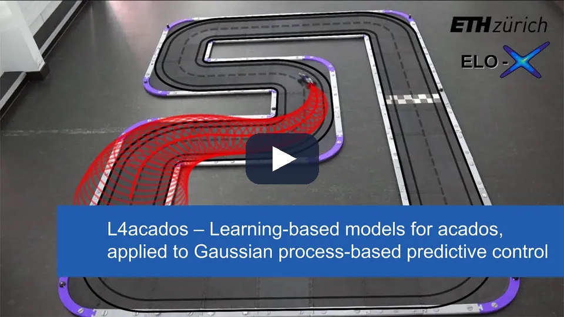
0차 GP-MPC
GP 평균을 파라미터로 넘기고 명목 모델의 미분으로 탐색한다. travplan은 TP-0071의 파라미터 전달 구조를 그대로 썼다.
일반 잔차 인터페이스
L4acados는 Python 모델과 그 민감도를 받는 일반 틀이다. travplan은 SGPR 잔차 하나를 손으로 꽂았다(control/acados_mpc/gp.py).
L4acados — Lahr 외, IEEE TCST — arXiv:2411.19258
M.3.8 · M.3.9 · 희소 GP
SGPR inducing point 64만 네 축을 모두 통과한다
| 모델 (훈련 1,400) | refresh | 41노드 예측 | \(d\omega\) RMSE | 분포 밖 최대 |μ| |
|---|---|---|---|---|
| 정확 GP 400점 | 4.5 ms | 0.72 ms | 0.0233 | 0.4 |
| 정확 GP 1400점 | 121.8 ms | 4.75 ms | 0.0190 | 0.6 |
| SGPR inducing point 64 | 5.5 ms | 0.36 ms | 0.0223 | 0.4 |
| RFF 특징 128 | 2.4 ms | 0.21 ms | 0.0208 | 1.9 |
| 선형 기준 | — | — | 0.0241 | — |
① 정확도 · ③ 시간
차이는 \(d\omega\)에서만 난다. SGPR 64는 1,400점을 다 쓰면서 주기 안에 든다.
② 보정 · ④ 분포 밖
SGPR은 보수적이고 데이터에서 멀면 prior로 돌아간다. RFF는 1.9까지 튄다.
travplan: 정확 GP를 SGPR 64로 바꾼 것만으로 폐루프 발산(0/12)이 멈췄다. 아이디어가 아니라 근사의 문제였다.
M.1.2 · M.3.18 · 튜브
튜브는 반평면의 오프셋 \(\rho_k\) 하나를 조이는 일이다
\(t_k = \min(z\sigma_k,\ 0.08\ \mathrm{m})\), \(z = \Phi^{-1}(0.95)\). 파라미터라 0차이고 코드 생성을 다시 하지 않는다.
GP는 확률, 튜브는 유계 외란이다. GP의 β-신뢰 타원체를 외란 집합으로 쓴다(Koller 2018). 실무는 고정 반경 튜브부터.
먼 노드까지 보장되는 튜브를 상태 하나로 얻는다. 보장은 상수가 오프라인 LMI에서 나올 때만 선다.
travplan: 1번 노드 coverage 97.4%로 보정은 맞았지만, 실행 여유도 성공도 늘지 않았다(선택 스택 mpc_gpcc).
[5] Dubied 외, Automatica 2026 — arXiv:2507.02098
M.3.18 · TP-0069 · 튜브 폭
SGPR 분산에서 나온 튜브는 4 s 끝에서 중앙값 4 cm, 90% 분위 8 cm(상한)다

세로축이 예측 노드 k, 가로축이 시각이다. 먼 노드일수록, 빨리 달릴 때일수록 진하다. 분산이 horizon을 따라 자라는 모습이다.
상한 8 cm는 90% 분위가 4 s 끝에서 닿는 값이다. 1번 노드 coverage 97.4%로 보정은 맞았지만, 실행 여유도 성공도 늘지 않았다.
travplan: 먼 노드의 폭은 보정되지 않았고(90 % 분위가 상한 8 cm에 닿는다), 튜브는 계획을 조금 더 조심스럽게 만들 뿐 실제 경로를 벽에서 떼지 못했다.
M.1.3 · TP-0124–0126
예측 모델은 기구학 → 동역학 → 학습의 세 층으로 쌓는다
| 층 | travplan에서 | 지금 |
|---|---|---|
| 기구학 | twist 적분 + box·가속 한계 (SwerveModel) | MPPI·MPC 모두 이것. 기준선 |
| 동역학 | 모듈 1차 지연 + 슬립 (SwervePlant) | MPPI 지연 rollout mppi_plant_lag(TP-0150). MPC의 mpc_lag는 선택 |
| 학습 | GP 잔차, NN 잔차, forward dynamics 모델(FDM) | GP 잔차만(TP-0120). 같은 프로토콜로 묶는다 |
학습 층은 로봇 메쉬를 고도 지도 위에서 forward 시뮬레이션한 데이터로 자기지도 학습한다(TP-0125). 한 점의 cost로는 자세·하부 간섭·단차를 구별하지 못한다.
선례: FDM + 샘플링 MPC(Kim 외, RSS 2022)는 6초 궤적 1,500개를 3 ms에 rollout한다 [10]. actuator net(Hwangbo 외, 2019) [11].
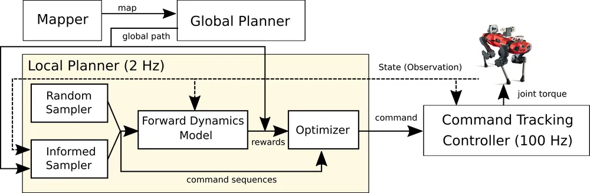
[10] Kim, Kim, Hwangbo, RSS 2022 — arXiv:2204.08647 · [11] Hwangbo 외, Science Robotics 2019 — arXiv:1901.08652
M.1.3 · 학습 층의 선례
RaiLab의 FDM은 학습 층이 forward 모델 전체를 맡고, 샘플 기반 MPC가 그 위에서 고른다
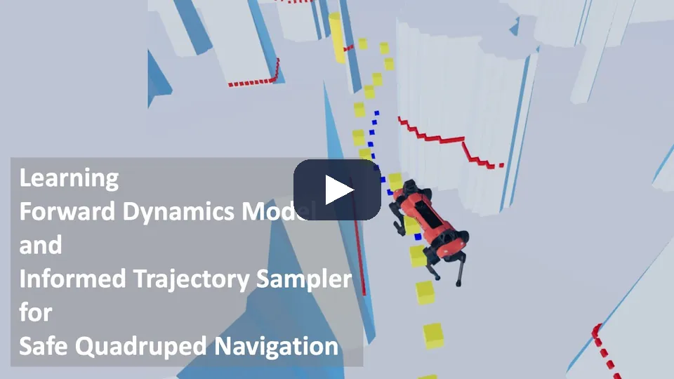
전체 로봇 시뮬 데이터로 자기지도 학습
전체 로봇 모델을 RaiSim 무작위 환경에서 시뮬레이션해 데이터를 모으고, FDM은 미래 위치와 충돌 확률을 낸다. travplan의 메쉬 시뮬레이터(TP-0125)가 그 자리다.
학습 층은 GP 잔차뿐(TP-0120). MPPI·MPC는 기구학 층 하나로 예측한다. FDM의 충돌 확률은 MPPI 확률 제약의 손으로 만든 여유를 대신할 후보다.
[10] Kim, Kim, Hwangbo, RSS 2022 — arXiv:2204.08647
M.2 · 시뮬 리그
plant가 MPC 모델과 같으면 아무것도 검증되지 않는다
| 층 | 무엇 | 언제 |
|---|---|---|
| 1 | MuJoCo (CPU, 1대) | MJCF 제작, 폐루프 검증 |
| 2 | MuJoCo Warp (GPU 배치) | 잔차 데이터 수집 |
| 3 | Isaac Sim 6.0 | P1 폐루프, LiDAR → TravMap |
MuJoCo 비동축 모듈 smoke: 5,000스텝 11 ms, 실시간의 938배
URDF에 없는 것은 손으로 쓴다
- 접촉 마찰·solref·solimp
- Dynamixel 액추에이터 모델
- 관성은 placeholder 값(TP-0035)
- 조향 범위: URDF ±90° / 제어기 ±60° / 모터 ±56.2°
robot/plant.py
모듈 모델 + 액추에이터 지연 + 지형 슬립. SimConfig(plant=...), 기본 끔
이상 설정 검증
명령을 1e-9로 재현. 기존 테스트 134개 그대로 통과
스워브 plant
벤치마크 --plant. 조향 한계 ±56.2°
travplan: 실험의 plant는 robot/plant.py(지연·모듈·슬립)다. 목표는 정확한 AntBot이 아니라 명목과 다른 plant다.
3 · 최근 연구 비교 (M.4, 2025–2026)
모델을 더 맞게, 초기해를 더 좋게
두 방향 모두 TP-0152의 실패 원인인 지연과 명령 떨림을 직접 고치지는 않는다
M.4 · 비교표 (1/2)
gradient 쪽은 잔차·튜브를, 초기해 쪽은 학습 모델을 더한다
| 연구 (연·발표) | 입력·표현 | 방법의 핵심 | 최적화기 | 실험 |
|---|---|---|---|---|
| AWOISV 필터 튜브 MPC (2025.08 · 프리프린트) | Frenet 좌표, 회전 중심 각도 | 운동 모드 + 칼만 필터 오차로 튜브 | LTV-MPC | TruckSim, HIL |
| 확산 초기해 MPC (2026.01 · RA-L 2026) | RGB 영상의 물체 슬롯 6개 | 확산 초안을 SDF hard 제약 OCP가 다듬는다 | Crocoddyl | Franka 실물 |
| RL 유도 PAC-NMPC (2026.09 · 프리프린트) | LiDAR 또는 깊이 영상 | RL 정책 → 초기해, 가치 → 종단 비용 | 샘플링(SNOPT) | 1/10 랠리카 실물 |
| 경로를 품은 MPC (2025.09 · 프리프린트) | 가시성 그래프 Dijkstra 경로 | 앞쪽 경로 구간을 결정 변수로 | NMPC | 1:28 차량 |
| 강건·적응 GP-MPC (2025.07 · Automatica 2026) | 상태, GP 오차 상한 | contraction metric 위 스칼라 튜브로 GP 오차 전파 | L4acados SQP | 쿼드로터 시뮬 |
| 데이터에서 강건 MPC까지 (2025.08 · 프리프린트) | 입출력 데이터 | 데이터에서 외란 box, SDP로 튜브 | acados·ForcesPro | 쿼드로터 시뮬 |
travplan: 초기해 쪽 연구는 OCP가 붙어야 성공했다. Planner D 궤적도 NMPC가 제약으로 다듬게 한다.
M.4 · 비교표 (2/2)
지형은 모델 입력이나 제약으로 들어가고, 샘플링이 비평활 모델을 rollout한다
| 연구 (연·발표) | 입력·표현 | 방법의 핵심 | 최적화기 | 실험 |
|---|---|---|---|---|
| 강건 비선형 MPC 외란 피드백 (2025.09 · ICRA 2026) | 상태 | 명목·외란 피드백·오차 상한을 함께 | SCP | 시뮬 |
| 고속 전지형 자율주행 (2026.03 · T-RO 투고) | 고도 지도와 수치 기울기 | 3차원 강체 모델 + 에너지 안정 여유 | GPU 샘플링 | 실차 48회 |
| 비평면 재귀 희소 GP (2026.02 · IEEE IV 2026) | 표면 법선의 roll·pitch | roll·pitch 입력 GP 잔차, 온라인 갱신 | MPPI | Isaac Sim만 |
| 에너지 정규화 NN 잔차 (2026.04 · 프리프린트) | 상태, 서보각, 로터 추력 | MLP 잔차에 에너지 증가 페널티 | acados RTI | 틸트 쿼드로터 |
| 전체 모델 물리 rollout (2025.06 · Sci. Robotics 2025) | 고도 지도, foothold 후보 | 필터 뒤 RaiSim rollout으로 고른다 | 샘플링 + 물리 | Raibo 실물 |
| L4acados (2024.11 · IEEE TCST) | 상태 | acados에 Python 잔차, 0차 GP-MPC | SQP-RTI | 경주차·실차 |
travplan: 잔차 GP 구조는 이미 같다. 새로운 것은 부호 있는 roll·pitch 입력 하나다.
M.4 · 비교표 (2/2) · 영상
에너지 정규화 잔차는 NMPC가 비물리적 가속을 이용해 떨리는 명령을 내는 것을 막는다
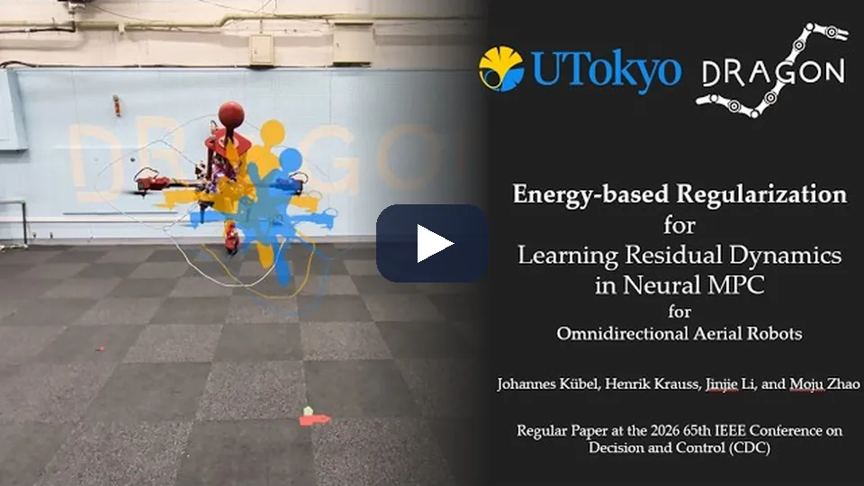
잔차가 에너지를 만들면 안 된다
학습 잔차가 물리적으로 말이 안 되는 가속을 만들면 NMPC가 그것을 이용해 떨리는 명령을 낸다. 보정의 에너지 증가에 페널티를 주어 막는다.
SGPR 잔차는 분산이 있어 분포 밖에서 prior로 돌아간다. 신경망 잔차로 바꾼다면 이런 정규화가 먼저 필요하다.
[9] Kübel 외, 2026 — arXiv:2604.14678
M.4 · 공통점
명목 모델에 잔차를 더하고, 그 불확실성으로 제약을 조인다
명목 모델 + 학습 잔차
식으로 아는 부분은 남기고 남는 오차만 배운다. mpc_gp도 같다.
불확실성으로 제약을 조인다
GP 오차 상한, 외란 box, 오차 불변 집합. M.1.2의 \(\rho_k\) 자리다.
학습 모델이 출발점을 준다
확산 궤적, RL 정책, 전역 경로 구간이 국소해 문제를 위에서 푼다.
지형은 비용 한 항으로 남지 않는다
GP 입력(roll·pitch), 3차원 강체 모델과 전복 제약, 물리 엔진으로 들어간다.
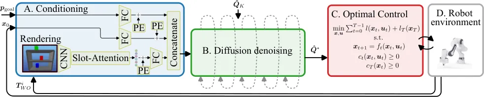
M.4 · 차이점
네 축에서 갈리고, travplan은 그 축마다 한쪽에 서 있다
잔차를 언제 배우나
오프라인 고정 vs 온라인 갱신. mpc_gp는 온라인(ring 버퍼 200, 5 스텝마다). 경사 부호가 없고 하이퍼파라미터는 고정이다.
확률이냐 box냐
확률은 신뢰도를 고르고, box는 단순하지만 크기를 데이터로 정한다. TP-0069의 먼 노드 폭은 보정되지 않았다.
gradient냐 샘플이냐
gradient는 매끄러운 모델이 필요하고, 샘플은 접촉·바퀴 이탈을 그대로 rollout한다. MPPI와 NMPC가 양쪽에 있다.
조향 한계를 어디서
Planner 비용(±130°), MPC 운동 모드(±90°). travplan ±56.2°는 원뿔이고, NMPC는 box만 쓴다.
travplan: 두 갈래가 gradient·샘플 축의 양 끝에 있으니, 같은 벤치마크의 짝 비교가 곧 이 축의 실험이다.
M.4 · travplan에 주는 의미
지연 상태 NMPC를 먼저, 학습 초기해는 마지막에 시도한다
- 지연 상태 NMPC (TP-0124 MPC 쪽): 명령을 상태 3개로, 변화율에 비용
- 부호 있는 경사 입력 GP: 1 s 예측 오차부터
- 조향 원뿔의 매끄러운 근사: 저속 처리 함께
- Planner D 궤적을 초기해로: 경사로 제외 시간 초과로 판정
- 자세 여유(ESM)를
CostTerm으로 먼저
contraction metric 튜브·SDP 파이프라인: 오프라인 LMI·SDP가 필요하고 실험이 쿼드로터 시뮬뿐이다.
PAC-NMPC의 SNOPT: acados RTI 구조와 맞지 않는다. 학습 가치를 종단 비용으로 쓰는 부분만 따로 본다.
travplan: 실패 원인(bang-bang 떨림)에 직접 닿는 것은 고전 해법인 지연 상태 확장뿐이다.
4 · 작업 기록 (M.3)
무엇을 만들고 무엇을 쟀나
0단계 6/12 → 정적 40/40·보행자 24/24 → plant에서 지연을 아는 MPPI에 진다
M.3.2 · 단계와 게이트
네 단계 가운데 셋은 넘었고, 분산 튜브는 효과가 없었다
| 단계 | TP | 통과 기준 | 결과 |
|---|---|---|---|
| 0 명목 MPC | TP-0070 | MPPI와 동률 40/40, < 20 ms | 명령 수정 뒤 40/40, 6.4 ms |
| 1 치명 셀 제약 + 보행자 | TP-0071 | 치명 셀을 제약으로 | 정적 40/40, 보행자 24/24 |
| 2 GP 평균 | TP-0068 | 1초 예측 오차 50% 감소 | RMSE 66–78% 감소 |
| 3 분산으로 조이기 | TP-0069 | 성공 ≥ 11/12 유지 | 효과 없음, 선택 스택 |
| 4 PCBF 회복, 튜브·SLP | — | — | 시작 안 함 |
툴체인: acados v0.3.4 소스 빌드, casadi 3.6.x. smoke OCP 0.087 ms/해(SQP-RTI, HPIPM). acados v0.3.4는 ocp.dims.N을 쓴다.
09-29
툴체인, 0단계 6/12, 1단계 9/12, plant·GP
→
09-30
구멍 진단, CBF, 보행자 23/24
→
10-01
GP 44/48, 명령 수정 40/40, 선택 스택들
→
10-04
GPU PC acados, plant 비교 TP-0152
M.3.3 · TP-0070 · 0단계
지형 항이 없는 MPC는 지형이 결정하는 곳에서 전멸했다
| 4 시나리오 × 3 seed | mpc | mppi |
|---|---|---|
| 성공 | 6/12 | 12/12 |
| curb_ramp | 0/3 | 3/3 |
| slope_crossfall | 3/3 | 3/3 |
| jerk | 2.5 | 4.4 |
| 제어 시간 | 8.6 ms | 12.6 ms |

travplan: 추종과 계산 예산은 이미 이겼다. 부족한 것은 지형 인지 하나다.
M.3.5 · TP-0071 · 1단계
치명 셀을 접평면 제약으로 넣자 6/12가 9/12가 됐다
| 단계 | 성공 | GT cost | 제어 |
|---|---|---|---|
| 0단계 (지형 없음) | 6/12 | 0.039 | 8.6 ms |
| 1단계 (치명을 제약으로) | 9/12 | 0.031 | 13.5 ms |
기준 guidance+mppi | 12/12 | 0.018 | 12.6 ms |
대가: 여유 0.15 m를 지키느라 curb_ramp 경로가 23–25 m(MPPI 13.8 m).
당시 "남은 셋은 솔버 문제"로 적었다 → 틀렸다(다음 장).
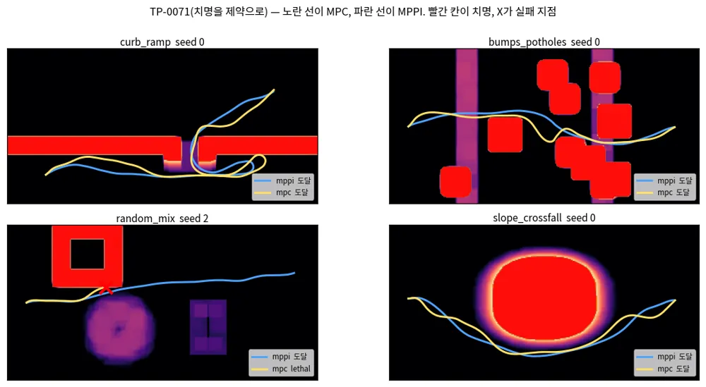
travplan: 노드마다 따로 거는 접평면이라 램프 양옆 벽을 서로 다른 노드가 잡는다.
M.3.10 · TP-0093
남은 실패는 솔버가 아니라 제약의 구멍이었다
| 구멍 | 무엇이 일어났나 | 고침 |
|---|---|---|
| 덩어리 안의 노드 | 가장 가까운 치명 셀이 자기 자신이라 법선이 없어 행을 껐다 | 가장 가까운 자유 셀 쪽 법선 |
| 셀 중심에서 잰 여유 | 0.15 m가 가장자리 기준으로는 0.125 m였다 | 가장자리에서 잰다(반 셀) |
| 지도 경계 | 지도 밖은 COST 1인데 LethalField는 격자 안만 봤다 | 바깥 한 셀을 치명으로 |
| 셀 조회 (코드 리뷰) | 내림으로 찾아 반 셀 어긋났다 | 반올림 |
+ 이산 CBF 감쇠(γ = 0.2): 경로가 뒤집힐 때 벽에 붙기 전에 감속한다.
정적 seed 0–9: 38/40, 제어 6.6 ms(MPPI 40/40). 여유 하나로는 램프 모서리와 좁은 틈을 함께 맞추지 못했다.
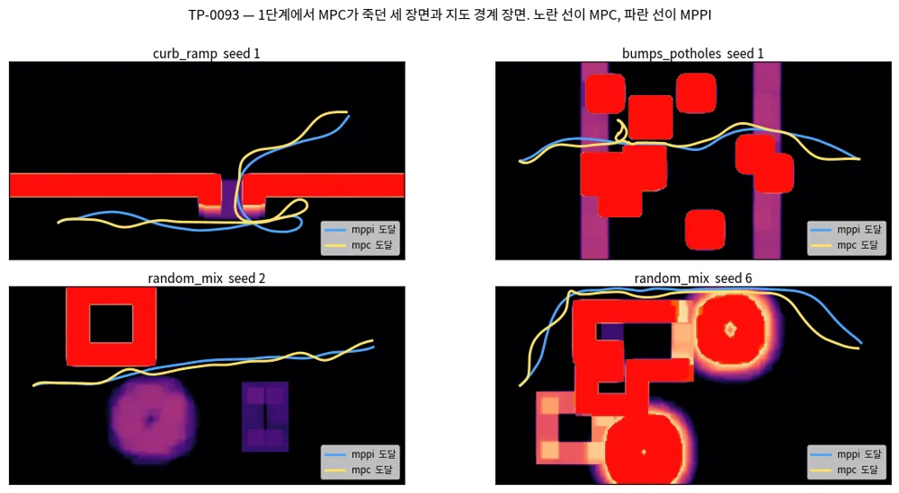
travplan: QP 반복 한계(status 3)는 원인이 아니라 증상이었다. 실패 에피소드를 스텝마다 계측해서 찾았다.
M.3.11 · TP-0071 나머지
보행자도 반평면 하나로, 다만 앞 2초에만 건다
| 보행자 3명, seed 0–5 | 성공 | 충돌 | 최소 여유 |
|---|---|---|---|
| 앞 2 s, slack 1e4 | 22/24 | 2 | −0.04 m |
| 앞 2 s, slack 1e6 (기본) | 23/24 | 0 | 0.08 m |
guidance+mppi | 24/24 | 0 | 0.24 m |
명령 수정(TP-0122) 뒤 MPC도 24/24, 충돌 0이다.
horizon 전체에 걸면 로봇이 얼어붙는다
원판은 예측 시간에 따라 0.15 m/s씩 자란다. 폭 1 m 통로에서 마주 오는 보행자의 원판은 4초 뒤 반경 1.15 m가 되어 통로를 막는다. 앞으로 가는 해가 없어진 MPC는 물러나다 블록에 닿았다.
travplan: freezing robot 구조다. 근본 처방은 로봇의 움직임에 반응하는 예측이다(TP-0090).
M.3.7 · M.3.12 · TP-0068
GP 평균의 폐루프를 무너뜨린 원인은 명령과 데이터 범위였다
GP를 넣은 모델의 \(Z_k\)는 plant가 실현할 twist다. 그것을 명령으로 보내 지연이 두 번 걸렸다. 보낼 것은 \(Z_k + u_k\Delta t\)다.
MPPI 주행은 명령 \(v_x\)가 0.93 m/s를 넘지 않았다. horizon 뒤쪽은 1.1–1.5 m/s를 계획한다. 가진(excitation) 주행 998 샘플을 더했다.
| plant, mpc_gp | curb_ramp | bumps |
|---|---|---|
| 정확 GP (M.3.7, 12 에피소드) | 합 0/12 | |
| 새 GP, 구간 평균 명령 | 0/3 | 1/3 |
| 새 GP + 명령 수정 | 10/12 | 10/12 |
GP 없음 mpc | 6/12 | 8/12 |
travplan: plant seed 0–11에서 mpc_gp 44/48, mpc 37/48. 데이터만 바꿔서는 curb_ramp가 하나도 풀리지 않았다.
M.3.15 · TP-0122
명목 MPC는 계획한 가속의 절반만 내고 있었다
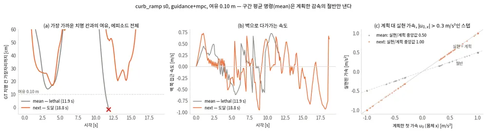
구간 평균 \(Z_k + \tfrac12 u_k\Delta t\)를 보내면 감속도 절반이라 정지 거리가 두 배다. command="next"는 \(Z_{k+1} = Z_k + u_k\Delta t\)를 보낸다.
| 조건 | 이전 | 고친 뒤 |
|---|---|---|
| 정적, 모든 여유 | 31–39/40 | 40/40 |
| plant seed 0–11 | 37/48 | 44/48 |
| rms jerk (정적) | 3.1 | 6.7 |
M.3.13–M.3.19 · 선택 스택
여유를 더하는 장치들은 여유를 넓혔지만 기본값이 되지 못했다
| 장치 | 잰 것 | 판정 |
|---|---|---|
부드러운 여유 행 mpc_sc (TP-0117) | 최소 GT 여유 5% 분위 10.2 → 12.2 cm, plant 41/48 | 성공 이득 없음 |
GP 분산 튜브 mpc_gpcc (TP-0069) | 1번 노드 coverage 97.4%, 실행 여유 차 0.00 cm, plant 42/48 | 기준 44/48 미달 |
여유를 아는 Guidance guidance_c (TP-0118) | 다섯 Controller 합 plant 221 → 228/240 | JS·Planner D 때문에 보류 |
| MPPI 확률 제약 0선 (TP-0076·0119) | 0선 오차 최대 4.97 → 0.78 cm, plant 85 → 89/96 (기준 88) | p ≈ 0.29, 유의하지 않음 |
GP 평균 rollout mppi_ccgpm (TP-0120) | plant curb_ramp 치명 0, 대신 멈춤 3 증가 43/48 | 승격 기준 미달 |
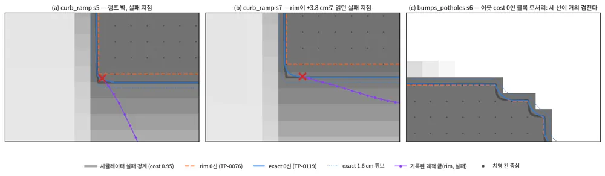
travplan: 남은 plant 치명 실패는 기하가 아니라 지연 편향을 가리켰다.
M.3.22 · M.3.24 · TP-0150·0152
plant 조건에서 NMPC는 지연을 아는 MPPI보다 치명이 여덟 배 많다
| 권장 L1 + plant | mppi | mppi_plant_lag | mpc | mpc_gp |
|---|---|---|---|---|
| 레벨 3 합 (360) | 221 (55) | 239 (4) | 222 (34) | 215 (32) |
| 경사로 제외 (270) | 206 (40) | 238 (1) | 222 (26) | 215 (22) |
| 레벨 0 (120) | 112 (4) | 116 (0) | 109 (3) | 108 (0) |
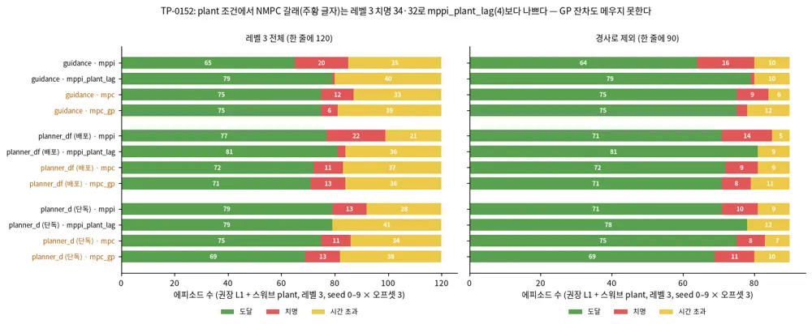
괄호는 치명 수. 짝 비교(대 mppi_plant_lag) 레벨 3: mpc 34 : 17 (p = 0.024), mpc_gp 34 : 10 (p = 0.0004). seed 0–9 × 오프셋 3.
travplan: plant 조건의 배포 Controller는 mppi_plant_lag다. NMPC 갈래는 안전 원칙에서 탈락이다.
M.3.24 · mpc_lag
지연을 되돌린 NMPC는 plant의 저역 통과까지 없애 더 나빠졌다
| bumps 레벨 3, 짝 | mpc | mpc_lag |
|---|---|---|
| 1. 지연 역변환 (29) | 25 도달, 치명 1 | 19, 치명 6 |
| 2. + 가속 비용 \(1/a^2\)배 (18) | 14, 치명 1 | 10, 치명 8 |
지연 모델은 맞았다. 계획이 bang-bang이다
두 NMPC 모두 계획이 가속 상한에 붙는다. 명목 mpc에서는 plant 지연이 그것을 걸러 줬다. 되돌리면 명령이 스텝마다 한계 양끝을 오가고, 조향 속도 한계에 걸리는 스텝이 6%에서 20%로 는다.
travplan: 다음 후보는 명령을 상태로 두고 변화율에 비용을 거는 지연 상태 모델이다(TP-0124).
5 · 정리와 다음
NMPC는 정적·보행자에서 MPPI와 같아졌고, plant의 지연에서 졌다
- 치명 셀 접평면 + CBF
- 보행자 앞 2 s 제약
- 0차 GP(SGPR 64)
- 정적 40/40, 보행자 24/24
- "솔버 문제"는 제약의 구멍이었다
- GP 이득 상당 부분은 명령 수정
- 튜브는 보정돼도 여유를 늘리지 않았다
- 지연이 bang-bang을 걸러 줬다
- 지연 상태 NMPC (TP-0124)
- jerk 줄이기 (TP-0123)
- 부호 있는 경사 GP
- Planner D 초기해
| 조건 | NMPC | MPPI | 근거 |
|---|---|---|---|
| 정적 seed 0–9 | mpc 40/40 | mppi 40/40 | TP-0122 |
| 보행자 3명 seed 0–5 | 24/24, 충돌 0 | 24/24, 충돌 0 | TP-0122 |
| 권장 L1 + plant 레벨 3 | mpc 222/360 (치명 34) | mppi_plant_lag 239/360 (치명 4) | TP-0152 |
travplan: NMPC 갈래는 지금 멈춤이다. 이어 간다면 지연 상태 모델이 먼저이고, 우선순위는 보행자·인식 뒤다(STATE).
참고문헌
이 발표가 인용한 연구
[1] Liu 외, ICAR 2025 — arXiv:2510.19054
[2] Yang 외, 2025 프리프린트 — arXiv:2508.13457
[3] Haffemayer 외, RA-L 2026 — arXiv:2601.02873
[4] Polevoy 외, 2026 프리프린트 — arXiv:2609.39854
[5] Dubied 외, Automatica 2026 — arXiv:2507.02098
[6] Benders 외, 2025 프리프린트 — arXiv:2508.07045
[7] Baxter 외, T-RO 투고 2026 — arXiv:2603.20525
[8] Amine 외, IEEE IV 2026 — arXiv:2602.16206
[9] Kübel 외, 2026 프리프린트 — arXiv:2604.14678
[10] Kim, Kim, Hwangbo, RSS 2022 — arXiv:2204.08647
[11] Hwangbo 외, Science Robotics 2019 — arXiv:1901.08652
[12] Kim 외, Science Robotics 2025 — arXiv:2506.02835
[13] Kalaria 외, 2022 (지연 상태 확장) — arXiv:2208.13856
경로를 품은 MPC, 외란 피드백 강건 MPC, L4acados: Controller 문서 E.6·E.7
영상의 원 논문: Grandia 외, T-RO 2023 — arXiv:2208.08373 · L4acados, Lahr 외, IEEE TCST — arXiv:2411.19258
travplan 결과: docs/research-mpc.md M.3, STATE.md. 코드: control/acados_mpc/